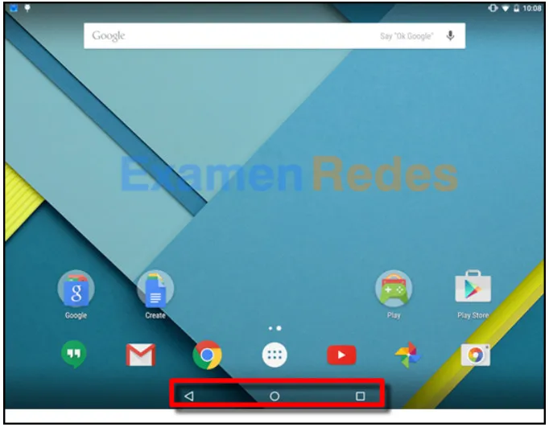

1. ¿Qué dos fuentes de datos de ubicación pueden usar las aplicaciones de localización para determinar la posición de un dispositivo móvil? (Elija dos opciones).
Un origen de aplicación2. ¿Cuáles de las siguientes son las dos formas en que iOS difiere de Android? (Elija dos opciones).
En iOS, las carpetas se crean arrastrando una aplicación sobre la otra; en Android, las carpetas se deben crear desde el menú de la pantalla de inicio.3. ¿Cuáles de los siguientes son dos propósitos de la característica de bloqueo por contraseña en dispositivos móviles? (Elija dos opciones).
Evitar el uso no autorizado del dispositivo.4. Observe la ilustración. ¿Qué dos afirmaciones son verdaderas sobre la pantalla exhibida del sistema operativo de un dispositivo móvil? (Elija dos opciones).
 El área rodeada por el rectángulo rojo contiene íconos de navegación.5. ¿Cuáles son los dos métodos que se utilizan comúnmente para eliminar las restricciones y las protecciones predeterminadas que se agregan a los sistemas operativos móviles? (Elija dos opciones).
Ejecución de rootkits6. Un archivo llamado new_resume tiene los siguientes permisos de archivo: rw-r-x–x. ¿Qué dos hechos pueden determinarse a partir esos permisos? (Elija dos opciones).
Los miembros del grupo pueden modificar el archivo.7. ¿Cuál es un origen seguro para descargar aplicaciones de Android?
Google Play8. ¿Cuál es el nombre del asistente digital o virtual de Windows Phone 8.1?
Cortana9. ¿Qué es una llamada a través de una red wifi?
Una manera conveniente de hacer pagos con los dispositivos móviles de forma segura.10. ¿Cuál es el propósito del programa de administrador de arranque?
Administrar los archivos de firma de antivirus, las claves de cifrado y los certificados cuando inicia un dispositivo.11. Un administrador vuelve a realizar una imagen de una gran cantidad de equipos Mac OS X. ¿Qué comando o herramienta incorporada puede utilizarse para arrancar las computadoras de forma remota?
mstsc12. ¿Qué herramienta o comando se utiliza en Mac OS X de navegar el sistema de archivos?
Administrador de tareas13. ¿Qué modelo utiliza Apple para proporcionar aplicaciones de iOS a los clientes?
Xcode14. Las aplicaciones de Android se ejecutan principalmente en función de los privilegios habilitados por el usuario. A veces, una aplicación Android requiere privilegios adicionales para acceder a los componentes del sistema. ¿Cómo se ejecutan las aplicaciones de Android para lograr ambas situaciones?
Las aplicaciones de Android se ejecutan a través de un servicio proxy.15. ¿Qué ícono de navegación en la barra de sistema de un dispositivo Android se utiliza para volver a la pantalla anterior?
Inicio16. ¿Qué afirmación describe los íconos de la aplicación iOS en la pantalla de un dispositivo móvil?
Cada ícono es un acceso directo a la aplicación.17. ¿Cuál es el propósito de utilizar la función de brillo automático en un dispositivo móvil con una pantalla LCD?
Mostrar mensajes de texto con un mejor contraste18. Un usuario del dispositivo móvil advierte que la actualización del sistema incluye una actualización de la ISDN de velocidad primaria (PRI). ¿Cuál es la función de la PRI?
Es la información de configuración que el dispositivo necesita para comunicarse en redes distintas de la red del proveedor.19. El usuario de una PC con Linux advierte que esta se inmoviliza durante el inicio, aparece una pantalla de detención y se desata una emergencia de kernel. ¿Cuál de las siguientes es una posible causa del problema?
El GRUB se dañó.20. ¿Qué sistema de archivos Linux introdujo el sistema de archivos de diario, que puede utilizarse para minimizar el riesgo de corrupción del sistema de archivos en caso de una interrupción repentina en el suministro de corriente?
CDFS21. ¿Qué sistema de archivos es el que utiliza principalmente Apple en computadoras con Macintosh actuales?
APFS22. Un instructor analiza hechos sobre el software operativo de un dispositivo móvil diferente. El instructor afirma: «Las señales de GPS se utilizan para habilitar el geocaché, el geoetiquetado y el seguimiento de dispositivos en estos dispositivos móviles». ¿Con qué SO se relaciona esto: iOS, Android o ambos?
Ambos23. Un archivo llamado new_resume tiene los siguientes permisos de archivo: rw-r-x–x . ¿Qué dos hechos pueden determinarse a partir esos permisos? (Elija dos opciones).
El usuario tiene acceso total al archivo.24. ¿Qué se utiliza para representar aplicaciones en la interfaz de Windows Phone?
Botones25. ¿Cuál es el propósito de los archivos de firma que se usan para proteger los dispositivos móviles y los sistemas operativos?
Contienen un registro de firmware y de actualizaciones de software históricos y pendientes.26. ¿Qué servicio de almacenamiento basado en la nube de Microsoft proporciona copias de seguridad?
iCloud27. ¿Cuál es el método más comúnmente utilizado para cerrar una aplicación que está estancada en una computadora con OS X?
Acceder al Centro de notificaciones .28. Un instructor analiza hechos sobre el software operativo de un dispositivo móvil diferente. El instructor afirma: «Para sincronizar un dispositivo móvil con una PC, iTunes debe estar instalado en la PC». ¿Con qué SO se relaciona esto: iOS, Android o ambos?
iOS29. Un instructor analiza hechos sobre el software operativo de un dispositivo móvil diferente. El instructor afirma: «Los dispositivos móviles tienen una característica denominada Spotlight que es una herramienta de búsqueda que proporciona información de muchas fuentes». ¿Con qué SO se relaciona esto: iOS, Android o ambos?
Android30. ¿Cuál es el resultado de hacer un restablecimiento de los valores de fábrica en un dispositivo móvil?
Se realiza una copia de respaldo completa del dispositivo y se eliminan todos los virus y malware.31. ¿Qué comando se utiliza para abrir un editor de texto en un sistema Linux?
ls32. Un administrador de Linux desea realizar una copia de respaldo de los archivos actuales en un directorio de datos y almacenarlos en un nuevo directorio, en otro disco. ¿Cuáles son los dos comandos que se necesitarían? (Elija dos opciones).
cp33. ¿Qué afirmación describe la ID táctil en los dispositivos iOS?
Es el valor hash de la huella digital del usuario.